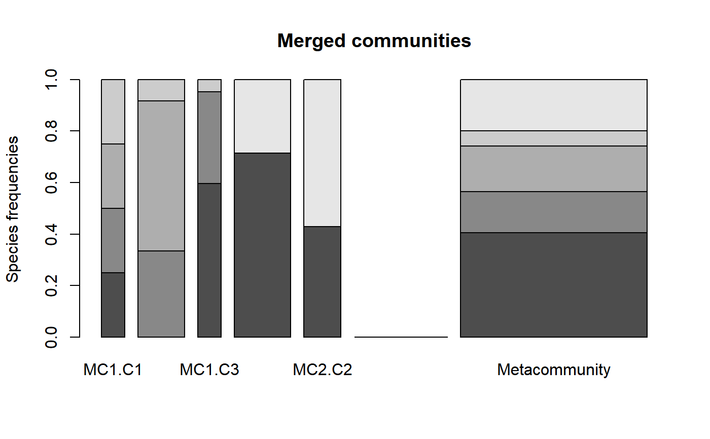
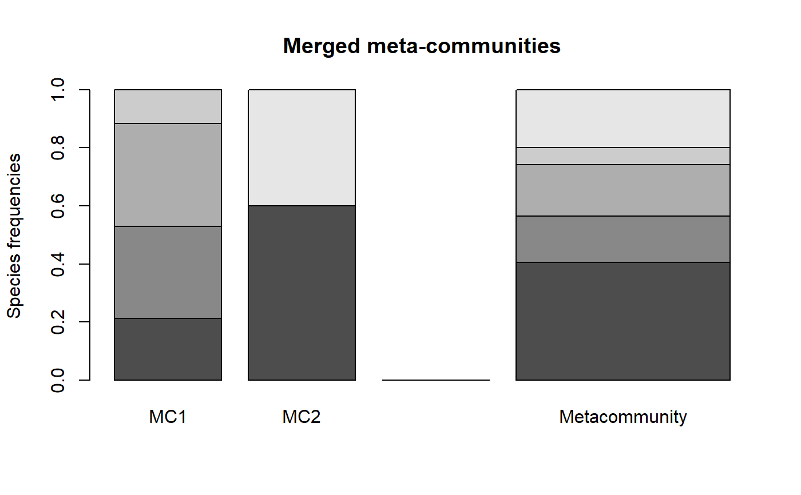
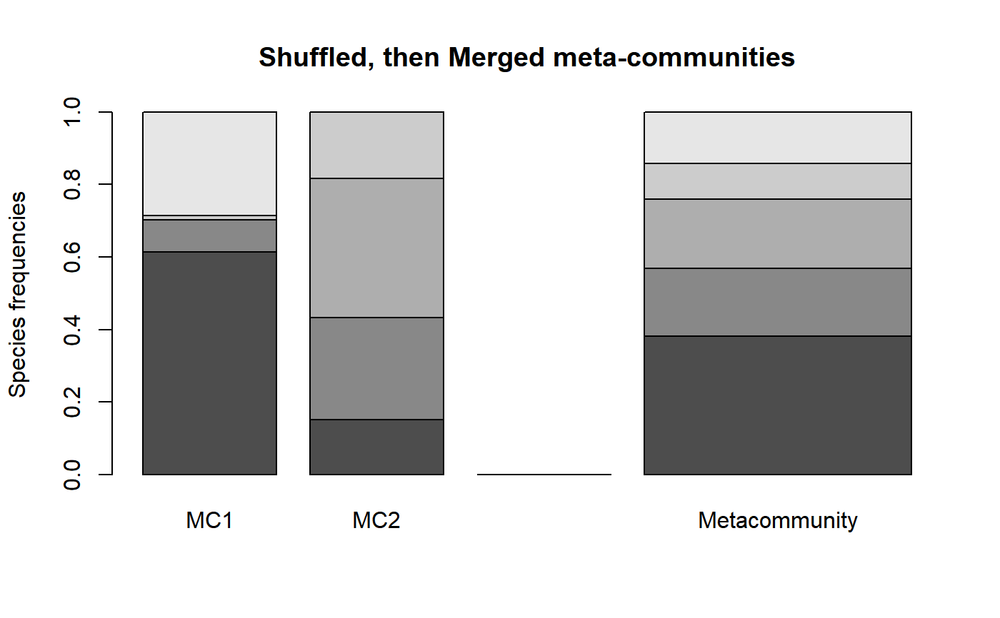

MergeMC.RdTools to manipulate meta-communities. From a list of meta-communities, MergeMC creates a metacommunity whose communities are each original metacommunity. MergeC creates a metacommunity whose communities are each original community. ShuffleMC randomly assigns original communities to a metacommunity, keeping original weights, and returns a list of meta-communities.
MergeMC(MClist, Weights = rep(1, length(MClist)), CheckArguments = TRUE) MergeC(MClist, Weights = rep(1, length(MClist)), CheckArguments = TRUE) ShuffleMC(MClist, Weights = rep(1, length(MClist)), CheckArguments = TRUE)
| MClist | A list of |
|---|---|
| Weights | A vector of numbers containing the weight of each metacommunity of the list. It does not have to be normalized to sum to 1. |
| CheckArguments | Logical; if |
MergeMC is used for hierarchical partitioning of diversity. The gamma diversity of communities of the list becomes alpha diversity of the merged meta-community.
MergeC creates a new meta-community by mixing original ones. Original communities are kept, their new weight is the product of their original weight and the weight of their original meta-community.
ShuffleMC is used for simulations of the null hypothesis that all metacommunities of the list are identical.
MergeMC and MergeC return a MetaCommunity.
ShuffleMC returns a list of MetaCommunity objects.
# First meta-community (df <- data.frame(C1 = c(10, 10, 10, 10), C2 = c(0, 20, 35, 5), C3 = c(25, 15, 0, 2), row.names = c("sp1", "sp2", "sp3", "sp4")))#> C1 C2 C3 #> sp1 10 0 25 #> sp2 10 20 15 #> sp3 10 35 0 #> sp4 10 5 2w <- c(1, 2, 1) MC1 <- MetaCommunity(Abundances = df, Weights = w) # Second meta-community (df <- data.frame(C1 = c(10, 4), C2 = c(3, 4), row.names = c("sp1", "sp5")))#> C1 C2 #> sp1 10 3 #> sp5 4 4w <- c(3, 2) MC2 <- MetaCommunity(Abundances = df, Weights = w) # Merge communities plot(MergeC(list(MC1, MC2)), main="Merged communities")#> Warning: Zhang-Huang sample coverage cannot be estimated because one probability is over 1/2. Chao estimator is returned.